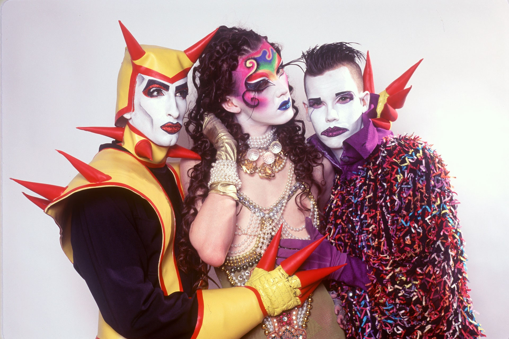

The Club Kids were a group of young New York City dance club personalities first established by Michael Alig, James St. James, Julie Jewels, DJ Keoki and Ernie Glam in the late 1980s, and throughout the 1990s would grow to include Amanda Lepore, Waltpaper (Walt Cassidy), Christopher Comp, It Twins, Jennytalia (Jenny Dembrow), Desi Monster (Desi Santiago), Kabuki Starshine and Richie Rich, among others.[1] The group was notable for its members' flamboyant behavior and outrageous costumes. In 1988, writer Michael Musto wrote about the Club Kids' "cult of crazy fashion and petulance": "They ... are terminally superficial, have dubious aesthetic values, and are master manipulators, exploiters, and, thank God, partiers."
The group, which Alig estimates included up to "750 in the early 90s at different levels",comprised (among others), its creators – Michael Alig; "Julie Jewels" and Michael Tronn, who helped organize the early "Outlaw Parties"; and Alig's mentor/friend/rival James St. James (born James Clark). Others were the following:
Walt Cassidy (artist) (Waltpaper), New York Club Kid and Author of NEW YORK: CLUB KIDS by Waltpaper Michael Musto, Village Voice columnist and partygoer alongside the Club Kids James St. James, Co-founder of the Club Kids movement and author of 'Disco Bloodbath: A Fabulous but True Tale of Murder in Clubland', a 1999 memoir of James' life as a Manhattan celebutante and club kid, as well as Michael Alig's murder of Andre "Angel" Melendez. The memoir was later retitled Party Monster, after the 2003 motion picture of that name starring Macaulay Culkin, Seth Green, Chloë Sevigny, and Marilyn Manson. Nelson Sullivan, videographer and host of cultural gatherings and events
Alig moved to NYC from his hometown—South Bend, Indiana—in 1984 and began hosting small events. In 1987, he supplanted Andy Warhol as a leading New York partier; in an Interview Magazine article, Alig said: "We were all going to become Warhol Superstars and move into The Factory. The funny thing was that everybody had the same idea: not to dress up but to make fun of people who dressed up. We changed our names like they did, and we dressed up in outrageously crazy outfits in order to be a satire of them—only we ended up becoming what we were satirizing."
The Club Kids' aesthetic emphasized outrageousness, "fabulousness", and sex. Gender was fluid, and everything was DIY. In Musto's words: "It was a statement of individuality and sexuality which ran the gamut, and it was a form of tapping into an inner fabulousness within themselves and bringing it out."
Here are my images.


| Members | Still Living |
|---|---|
| Michael Alig | Yes |
| James St. James | Yes |
| Angel Melendez | No |